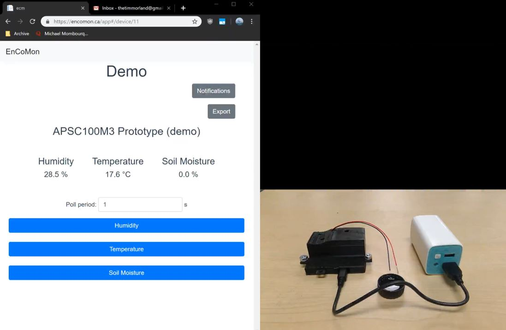
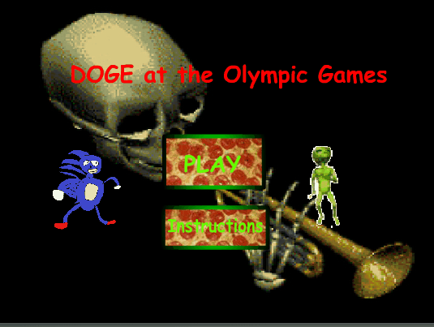

During my first year design class, my team and I developed a prototype for a system that detects humidity, temperature, and soil moisture levels that targeted exotic ecosystems. For the actual prototype, a custom PCB was designed with CAD as well as an external casing that was 3D printed. The website was developped using Bootstrap, HTML, and JS and done with a backend of PHP. The backend dealt with the login and data flow from the module that was displayed on the site.

Child detector made in my second year design class using FSR, temperature, and PIR sensors, and Arduino UNO to detect temperature and the variables that corresponded to a presence of a child (weight and movement). This was programmed with Arduino C and assembled over a course of a few weeks. The data is continously streamed into the server, and if there is a trigger for any "dangerous" conditions, then it will ring the buzzer.

This game was my first taste of programming through the OOP language used in Adobe Flash of Actionscript 3. The game took a course of over two months by myself. This was a racing game where you aimed to finish three laps at the fastest time possible in four different tracks. I developped and animated all the content of the game through Adobe Flash CS4 and used publically sourced images and music for the game's assets.